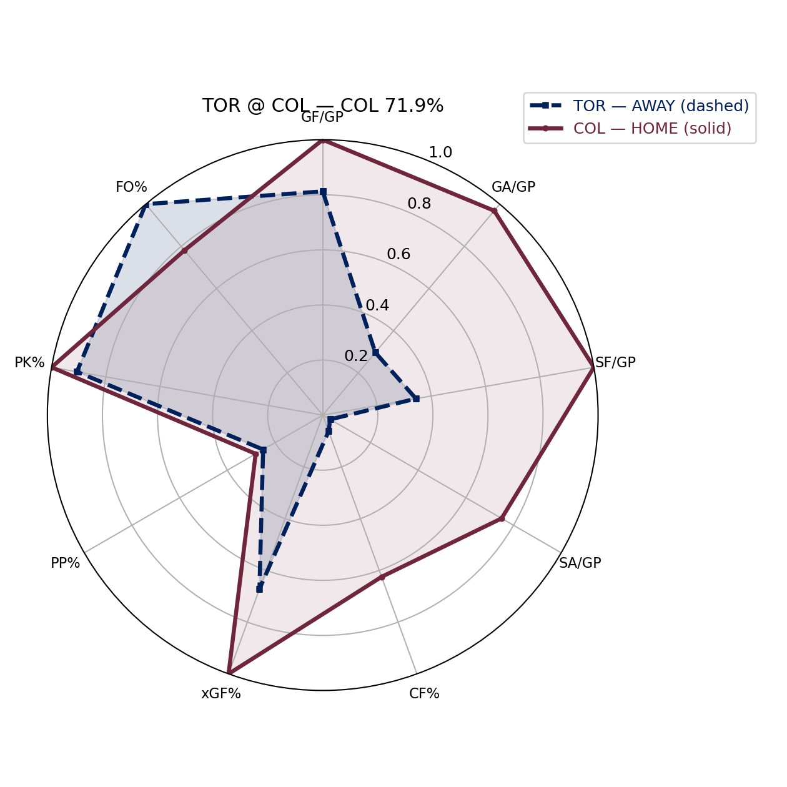
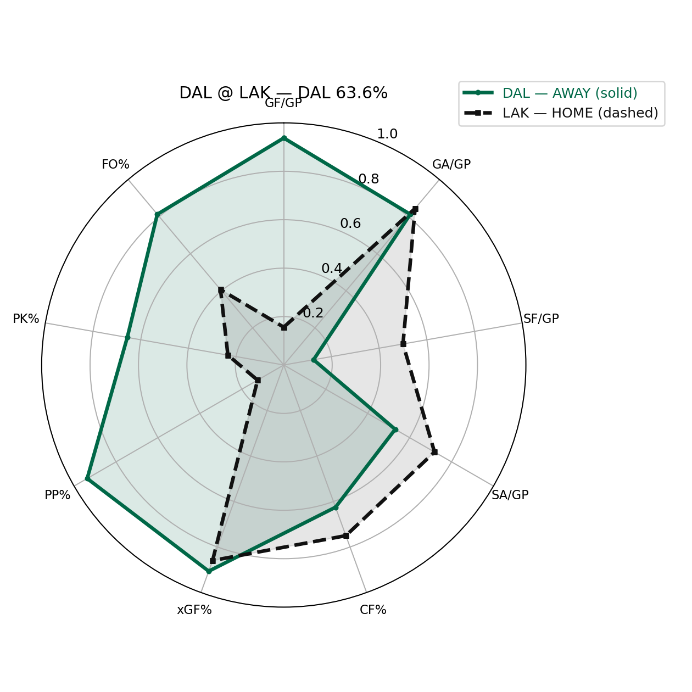
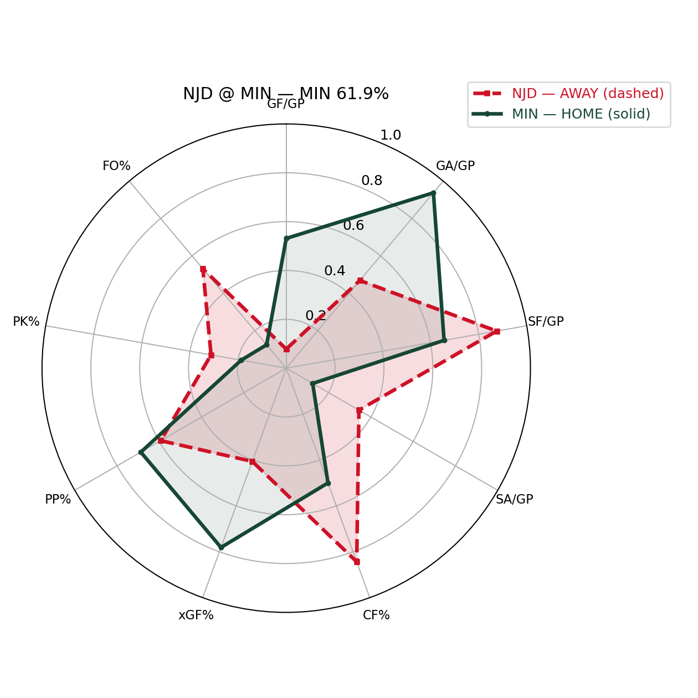
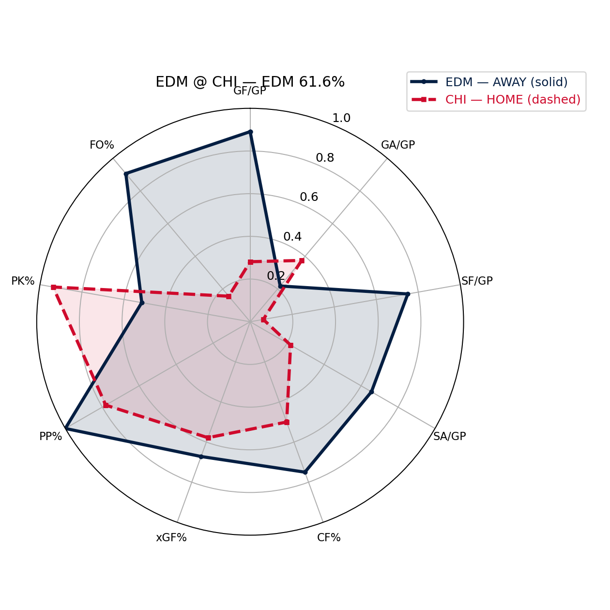
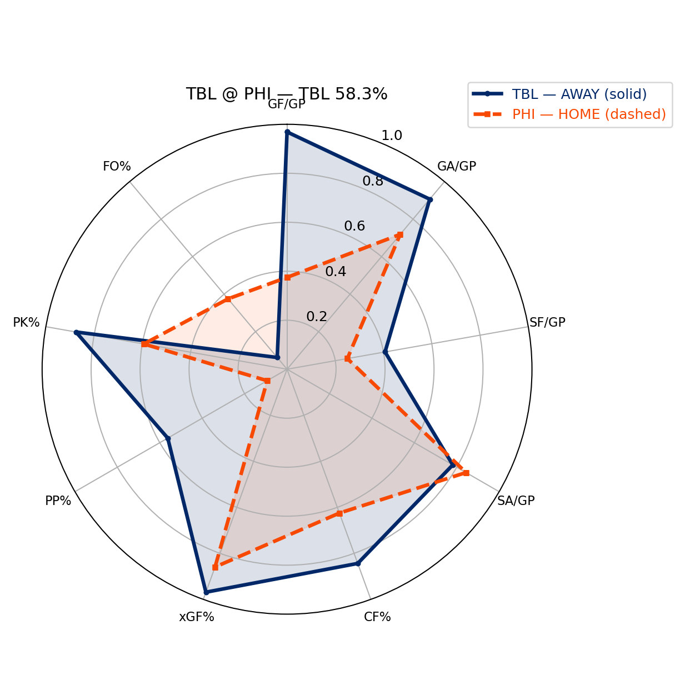
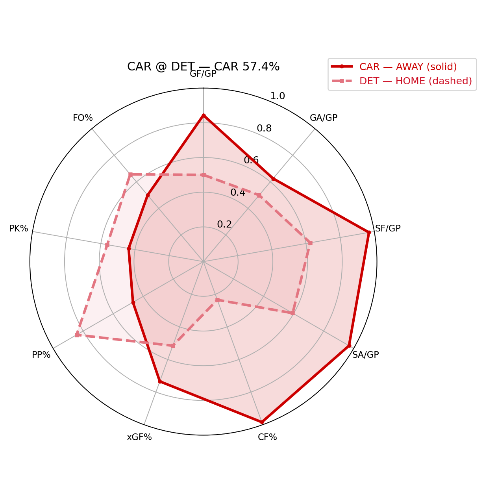
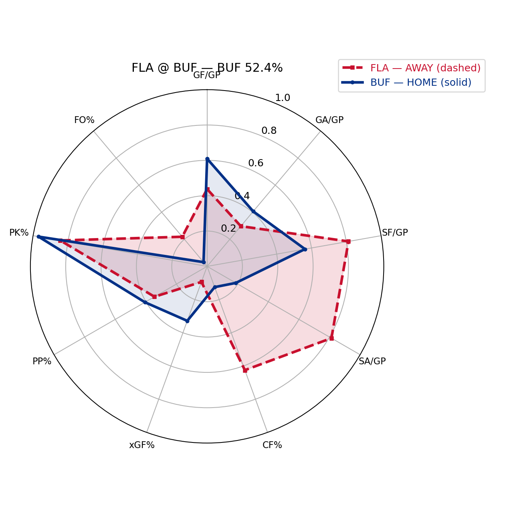
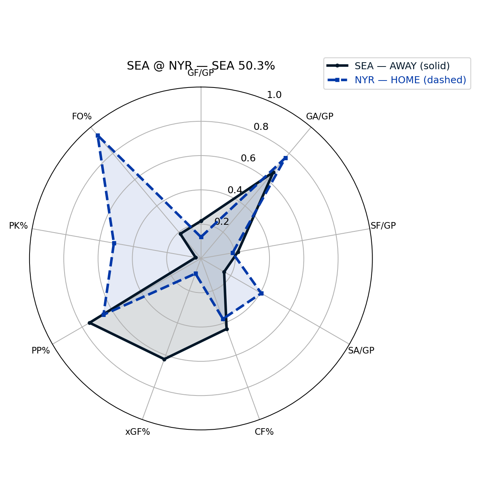

NHL Picks Report — 2026-01-12 (Toronto-local)
Metrics used: ALL available numeric columns (9)
LOGIT_K: 3.45 | HOME_ICE_LOGIT_BONUS=0.1
SHRINK_ALPHA: 0.33 (+coverage-weighted=True) toward 0.5
PROB_CAP: [0.08, 0.92] | EDGE_WINSOR=±0.25 | TEMP=1.28
MATCHUP_LAYER: ON | LOGIT_CAP=±0.22 | WEIGHT=0.80 | SPECS=7
STANDINGS_LAYER: ON | LOGIT_CAP=±0.18 | WEIGHT=0.90 | MIN_GP=10
SCHEDULE_LAYER: ON | LOGIT_CAP=±0.20 | WEIGHT=0.85 | mode=game_fatigue | diffs=rest_diff/travel_diff/cong_diff
TOR @ COL
PICK: COL 71.9% • Strong • implied ML -256
2026-01-13T03:00:00Z
z_total=+1.20 | z_base=+0.88 | z_matchup=+0.22 | z_standings=-0.08 | z_schedule=+0.18
Results vs model: points%=0.580 | model=0.486 | Δ=+0.093 | (+4 spots over)
Results vs model: points%=0.830 | model=0.823 | Δ=+0.007 | (0 spots)
Why (schedule): Schedule/Fatigue: rest_diff=+0d | travel_diff=-2162km | cong_diff=+0 | fatigue_diff=-2.16 | z=+0.184
Why (context): Because it shows broad two-way dominance, and controls play and shot/possession, and suppresses shots and goals effectively, and creates higher-quality chances. Matchup angle: it has an edge in penalty kill vs their power play; it has an edge in shot volume vs their shot suppression; it has an edge in finishing/scoring vs their goals-against profile. Results note: COL has lagged expectation in the standings relative to TOR (profile still likes it here).
VAN @ MTL
PICK: MTL 66.5% • Strong • implied ML -198
2026-01-13T00:30:00Z
z_total=+0.88 | z_base=+0.78 | z_matchup=+0.22 | z_standings=-0.08 | z_schedule=-0.04
Results vs model: points%=0.420 | model=0.247 | Δ=+0.174 | (-1 spots under)
Results vs model: points%=0.622 | model=0.542 | Δ=+0.081 | (+4 spots over)
Why (schedule): Schedule/Fatigue: rest_diff=+0d | travel_diff=-504km | cong_diff=+1 | fatigue_diff=-0.00 | z=-0.042
Why (context): Because it shows broad two-way dominance, and suppresses shots and goals effectively, and has a meaningful special-teams edge, and controls play and shot/possession. Matchup angle: it has an edge in finishing/scoring vs their goals-against profile; it has an edge in chance-quality share; it has an edge in power play vs their penalty kill. Results note: MTL has lagged expectation in the standings relative to VAN (profile still likes it here).

DAL @ LAK
PICK: DAL 63.6% • Medium • implied ML -175
2026-01-13T03:00:00Z
z_total=-0.71 | z_base=-0.35 | z_matchup=-0.22 | z_standings=+0.06 | z_schedule=-0.20
Results vs model: points%=0.678 | model=0.705 | Δ=-0.027 | (+3 spots over)
Results vs model: points%=0.545 | model=0.510 | Δ=+0.035 | (-6 spots under)
Why (schedule): Schedule/Fatigue: rest_diff=+0d | travel_diff=-1710km | cong_diff=-2 | fatigue_diff=-2.71 | z=+0.200
Why (context): Because it shows broad two-way dominance, and has a meaningful special-teams edge, and controls play and shot/possession, and has the edge in finishing and goaltending. Matchup angle: it has an edge in power play vs their penalty kill; it has an edge in penalty kill vs their power play; it has an edge in faceoff profile. Results note: DAL has lagged expectation in the standings relative to LAK (profile still likes it here).
NJD @ MIN
PICK: MIN 61.9% • Medium • implied ML -163
2026-01-13T01:00:00Z
z_total=+0.62 | z_base=+0.12 | z_matchup=+0.17 | z_standings=+0.13 | z_schedule=+0.20
Results vs model: points%=0.511 | model=0.495 | Δ=+0.016 | (-5 spots under)
Results vs model: points%=0.663 | model=0.503 | Δ=+0.160 | (+12 spots over)
Why (schedule): Schedule/Fatigue: rest_diff=+1d | travel_diff=-628km | cong_diff=-1 | fatigue_diff=-1.63 | z=+0.200
Why (context): Because it creates higher-quality chances, and suppresses shots and goals effectively, and has the edge in finishing and goaltending. Matchup angle: it has an edge in power play vs their penalty kill; it has an edge in chance-quality share; it has an edge in shot volume vs their shot suppression. Results note: MIN has been outperforming expectation in the standings relative to NJD.
EDM @ CHI
PICK: EDM 61.6% • Medium • implied ML -160
2026-01-13T01:30:00Z
z_total=-0.60 | z_base=-0.53 | z_matchup=-0.22 | z_standings=+0.18 | z_schedule=-0.03
Results vs model: points%=0.567 | model=0.707 | Δ=-0.140 | (-12 spots under)
Results vs model: points%=0.500 | model=0.432 | Δ=+0.068 | (-3 spots under)
Why (schedule): Schedule/Fatigue: rest_diff=+0d | travel_diff=+1666km | cong_diff=-2 | fatigue_diff=+0.67 | z=+0.028
Why (context): Because it shows broad two-way dominance, and controls play and shot/possession, and suppresses shots and goals effectively, and has the edge in finishing and goaltending. Matchup angle: it has an edge in finishing/scoring vs their goals-against profile; it has an edge in shot volume vs their shot suppression; it has an edge in faceoff profile. Results note: EDM has lagged expectation in the standings relative to CHI (profile still likes it here).
TBL @ PHI
PICK: TBL 58.3% • Medium • implied ML -140
2026-01-13T00:00:00Z
z_total=-0.43 | z_base=-0.32 | z_matchup=-0.22 | z_standings=+0.11 | z_schedule=+0.00
Results vs model: points%=0.663 | model=0.708 | Δ=-0.046 | (-3 spots under)
Results vs model: points%=0.605 | model=0.526 | Δ=+0.079 | (+2 spots over)
Why (schedule): Schedule/Fatigue: rest_diff=+0d | travel_diff=+0km | cong_diff=+0 | fatigue_diff=+0.00 | z=+0.000
Why (context): Because it has a meaningful special-teams edge, and controls play and shot/possession, and has the edge in finishing and goaltending. Matchup angle: it has an edge in penalty kill vs their power play; it has an edge in finishing/scoring vs their goals-against profile; it has an edge in possession/territory profile. Results note: TBL has lagged expectation in the standings relative to PHI (profile still likes it here).
CAR @ DET
PICK: CAR 57.4% • Medium • implied ML -135
2026-01-13T00:00:00Z
z_total=-0.38 | z_base=-0.29 | z_matchup=-0.22 | z_standings=+0.13 | z_schedule=-0.00
Results vs model: points%=0.656 | model=0.726 | Δ=-0.070 | (-2 spots under)
Results vs model: points%=0.630 | model=0.559 | Δ=+0.071 | (+5 spots over)
Why (schedule): Schedule/Fatigue: rest_diff=+0d | travel_diff=-19km | cong_diff=+0 | fatigue_diff=-0.02 | z=+0.002
Why (context): Because it shows broad two-way dominance, and controls play and shot/possession, and suppresses shots and goals effectively, and has the edge in finishing and goaltending. Matchup angle: it has an edge in possession/territory profile; it has an edge in finishing/scoring vs their goals-against profile; it has an edge in shot volume vs their shot suppression. Results note: CAR has lagged expectation in the standings relative to DET (profile still likes it here).
FLA @ BUF
PICK: BUF 52.4% • Lean • implied ML -110
2026-01-13T00:00:00Z
z_total=+0.12 | z_base=-0.12 | z_matchup=+0.08 | z_standings=+0.13 | z_schedule=+0.03
Results vs model: points%=0.557 | model=0.498 | Δ=+0.059 | (-1 spots under)
Results vs model: points%=0.605 | model=0.403 | Δ=+0.202 | (+18 spots over)
Why (schedule): Schedule/Fatigue: rest_diff=+0d | travel_diff=-358km | cong_diff=+0 | fatigue_diff=-0.36 | z=+0.030
Why (context): Because it creates higher-quality chances, and has a meaningful special-teams edge, and has the edge in finishing and goaltending. Matchup angle: it has an edge in penalty kill vs their power play; it has an edge in finishing/scoring vs their goals-against profile; it has an edge in chance-quality share. Results note: BUF has been outperforming expectation in the standings relative to FLA.
SEA @ NYR
PICK: SEA 50.3% • Lean • implied ML -101
2026-01-13T00:00:00Z
z_total=-0.02 | z_base=+0.30 | z_matchup=-0.22 | z_standings=-0.13 | z_schedule=+0.03
Results vs model: points%=0.558 | model=0.365 | Δ=+0.194 | (+11 spots over)
Results vs model: points%=0.500 | model=0.451 | Δ=+0.049 | (-4 spots under)
Why (schedule): Schedule/Fatigue: rest_diff=+0d | travel_diff=+385km | cong_diff=+0 | fatigue_diff=+0.38 | z=-0.033
Why (context): Because it creates higher-quality chances, and controls play and shot/possession, and has a meaningful special-teams edge. Matchup angle: it has an edge in chance-quality share; it has an edge in power play vs their penalty kill. Results note: SEA has been outperforming expectation in the standings relative to NYR.
